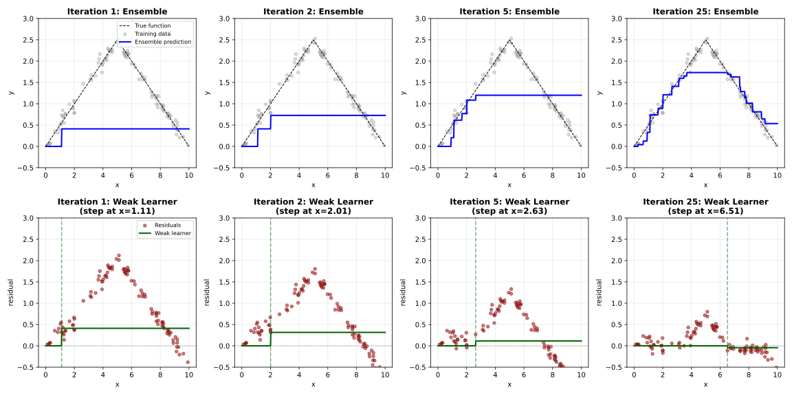

Lecture 17: Boosting
Learning Objectives
By the end of this lecture, you should be able to:
- Differentiate strong learners from weak learners
- Connect weak learners and strong learners through the lens of boosting
- Derive the AdaBoost algorithm in pseudocode
- Identify the settings in which boosting is likely beneficial
- Articulate advantages and disadvantages of boosted (small) trees versus bagged (large) trees beyond accuracy
Motivation: High-Bias Ensembles
- In the last lecture, we saw that high-variance/low-bias models (such as full-depth decision trees) can be ensembled using bagging/random forests to produce low-variance/low-bias predictions.
- In this lecture, we are going to explore an orthogonal ensembling strategy called boosting, which aims to combine many high-bias/low-variance models into a single low-bias/low-variance prediction.
Weak Learners versus Strong Learners
Before we dive into the boosting algorithm, let’s first define what we mean by “weak learners” and “strong learners”.
Definitions
A strong learner is a predictive model that can achieve arbitrarily low error on any learning problem, given enough data. In other words, a strong learner can learn any target function to arbitrary accuracy.
- Examples: Non-parametric models, deep decision trees, etc.
A weak learner is a predictive model that can only achieve slightly better than random guessing on any learning problem. Specifically, for a binary classification problem where random guessing would achieve 50% accuracy, a weak learner can achieve \(50\% + \epsilon\) accuracy for some small \(\epsilon > 0\).
- Examples: Depth-1 decision trees (stumps).
A weak learner is limited in its ability to fit complex functions (e.g. high bias), while a strong learner is flexible enough to fit any function (e.g. low bias, and low variance given enough data).
Can We Turn Weak Learners into Strong Learners?
- In 1988, Michael Kearns posed the fundamental question: “Can a set of weak learners be combined to create a single strong learner?”
- In 1990, Robert Schapire proved that the answer to this question is “yes,” by introducing the boosting algorithm and proving that it yields strong learners from weak learners.
High-Level Idea
Let’s consider a simple 1D example to illustrate how boosting can combine weak learners into a strong learner:
Suppose our weak (high-bias) learner is a “step function” with a single learnable parameter: \(t\) (the location of the step):
\[ \hat h(x) = \begin{cases} 0 & x < t \\ 1 & x \geq t \end{cases} \]
With just a single step function, we have no hope of approximating any complex target function (high bias).
However, a linear combination of multiple step functions \(\hat h_1, \ldots, \hat h_m\) will yield a piecewise constant function. Assuming the functions are ordered by their step locations \(t_1 < t_2 < \ldots < t_m\), we get:
\[ \sum_{j=1}^m \beta_j \hat h_j(x) = \begin{cases} 0 & x < t_1 \\ \beta_1 & t_1 \leq x < t_2 \\ \beta_1 + \beta_2 & t_2 \leq x < t_3 \\ \vdots \\ \sum_{j=1}^m \beta_j & x \geq t_m \end{cases} \]
where \(\beta_j\) are the linear combination weights. As \(m \to \infty\), we have enough step locations to approximate any continuous function arbitrarily well!
Boosting will learn the step locations \(t_j\) / weights \(\beta_j\) in a sequential manner, where each new step function is trained to correct the errors made by the current ensemble.
Intuition: A “Weak” Golfer
- Imagine you are a golfer who is not very skilled (a weak learner).
- Your goal is to hit the golf ball into the target \((Y_1, Y_2)\) from your current location: \((0, 0)\)
- You begin by taking your first swing in the direction \(t_1\) and you hit the ball with strength \(\beta_1\), landing at location \(( \hat Y^{(1)}_1, \hat Y^{(1)}_2 )\).
- If we recenter our coordinate system to this new location, our new task is to hit the ball from \((0, 0)\) to the new target \((Y_1 - \hat Y^{(1)}_1, Y_2 - \hat Y^{(1)}_2)\).
- We take our second swing in direction \(t_2\) with strength \(\beta_2\), landing at location \(( \hat Y^{(2)}_1, \hat Y^{(2)}_2 )\) in our new coordinate system.
- Again, if we recenter our coordinate system to this new location, our new task is to hit the ball from \((0, 0)\) to the new target \((Y_1 - (\hat Y^{(1)}_1 + \hat Y^{(2)}_1), Y_2 - (\hat Y^{(1)}_2 + \hat Y^{(2)}_2))\).
- If we repeat this process enough times, we will eventually hit the target exactly!
Algorithm 1: Forward Stagewise Additive Modelling
Let’s take this golf analogy and translate it into a mathematical algorithm. We are going to sequentially learn a series of weak learners \(\hat h^{(1)}, \hat h^{(2)}, \ldots, \hat h^{(m)}\) and corresponding weights \(\beta^{(1)}, \beta^{(2)}, \ldots, \beta^{(m)}\) to form an ensemble predictor:
\[\hat f^{(m)}(X) = \sum_{t=1}^m \beta^{(t)} \hat h^{(t)}(X) \]
- Boosting works by training weak learners sequentially, where each new weak learner is trained to correct the errors made by the previous ensemble.
The Core Algorithm
We will use a recursive procedure to sequentially learn the ensemble models \(\hat h^{(t)}\) and weights \(\beta^{(t)}\).
Regression Problems
Let \(\hat h^{(t)}\) be a weak learner (e.g. our step function from before) and \(\beta^{(t)}\) be a corresponding weight term.
To have \(\beta^{(t)} \hat h^{(t)}\) correct the errors of the previous ensemble \(\hat f^{(t-1)}\), we can train \(\beta^{(t)} \hat h^{(t)}\) to predict the residuals (errors) of the current ensemble on the training data:
\[ R_i^{(t)} = Y_i - \hat f^{(t-1)}(X_i) = Y_i - \sum_{j=1}^{t-1} \beta^{(j)} \hat h^{(j)}(X_i) \]
We then simultaneously select \(\beta^{(t)}\) and \(\hat h^{(t)}\) to minimize the squared error on these residuals
\[ \hat h^{(t)}, \beta^{(t)} = \arg\min_{h, \beta} \sum_{i=1}^n (R_i^{(t)} - \beta h(X_i))^2 \]
This is similar to empirical risk minimization (ERM), except we are minimizing the loss on the residuals rather than the original response variables \(Y_i\).
We could incorporate the weight \(\beta^{(t)}\) into the weak learner \(\hat h^{(t)}\) itself, e.g. by defining our weak learner to be scaled step functions with two learned parameters: \(t\) (step location) and \(\beta\) (step height).
\[\hat h(x) = \begin{cases} 0 & x < t \\ \beta & x \geq t \end{cases}.\]
In practice, it is not always natural to incorporate the weight into the weak learner itself. For example, decision trees typically do not have a natural scaling parameter.
More importantly, having an explicit weight term allows us to control the contribution of each weak learner to the ensemble. If we simply add each weak learner’s prediction to the ensemble without any weighting, the ensemble might oscillate or diverge rather than converging to a good solution.
In the golf example, we want our swings to get lighter (i.e. \(\beta^{(t)}\) to get smaller) as we get closer to the target. Otherwise, we might overshoot the target and end up further away than before.
Generic Problems
The above procedure can be generalized to arbitrary loss functions \(\ell(Y, \hat f(X))\) (not just squared error).
For the squared error, note that:
\[ \begin{aligned} \left( \underbrace{R_i^{(t)}}_{Y_i - \hat f^{(t-1)}(X_i)} - \beta^{(t)} \hat h^{(t)}(X_i) \right)^2 &= \left(Y_i - \left( \hat f^{(t-1)}(X_i) - \beta^{(t)} \hat h^{(t)}(X_i) \right) \right)^2 \\ &= \ell( Y_i, \hat f^{(t-1)}(X_i) + \beta^{(t)} \hat h^{(t)}(X_i) ) \end{aligned} \]
Therefore, we can train the weak learners to minimize the loss on the updated ensemble predictions directly:
\[ (\hat h^{(t)}, \beta^{(t)}) = \arg\min_{h, \beta} \sum_{i=1}^n \ell( Y_i, \hat f^{(t-1)}(X_i) + \beta h(X_i) ) \]
This procedure yields the following generic boosting algorithm:
Given:
- A training sample \(\mathcal{D} = \{(X_i, Y_i)\}_{i=1}^n\) for some regression problem
- A weak learning algorithm (e.g., depth-1 decision trees)
- The number of boosting rounds \(m\)
Initialize the ensemble predictor:
\[ \hat f^{(0)}(X) = 0 \quad \text{for all } X\]
For \(t = 1, 2, \ldots, m\):
Choose a weak learner \(\hat h^{(t)}\) that fits the current residuals:
\[ \hat h^{(t)}, \beta^{(t)} = \arg\min_{h, \beta} \sum_{i=1}^n \ell \left( Y_i, \hat f^{(t-1)}(X_i) + \beta h(X_i) \right) \]
Update the ensemble predictor:
\[ \hat f^{(t)}(X) = \hat f^{(t-1)}(X) + \beta^{(t)} \hat h^{(t)}(X) \]

In general, the simultaneous optimization over \(\hat h^{(t)}\) and \(\beta^{(t)}\) can be computationally expensive, depending on the weak learner and loss function used.
Fortunately, there are specific settings where this optimization can be done efficiently. One such setting is binary classification with exponential loss, which leads to the popular AdaBoost algorithm.
AdaBoost: Adaptive Boosting for Binary Classification
- AdaBoost (Adaptive Boosting) was introduced by Freund and Schapire in 1996.
- It is designed for binary classification problems and uses exponential loss, and it is a rare example where the optimization problem above can be solved efficiently in closed form.
- AdaBoost has remarkable theoretical properties: it can drive training error to zero in \(O(\log n)\) iterations.
Deriving AdaBoost
Assume that \(Y_i \in \{-1, +1\}\) for all \(i\) (binary classification), and assume that each weak learner \(\hat h^{(t)}\) also outputs predictions in \(\{-1, +1\}\).
The exponential loss is given by:
\[ \ell(Y, \hat Y) = \exp(-Y \hat Y) \]
- If \(Y\) and \(\hat Y\) have the same sign (correct classification), then the term inside the exponential is negative (low loss)
- If \(Y\) and \(\hat Y\) have opposite signs (incorrect classification), then the term inside the exponential is positive (high loss)
- We can view the exponential loss as an approximation to the 0-1 loss that really penalizes large/incorrect \(\hat Y\) values.
Let’s apply this loss (and the fact that \(\hat h^{(t)}(X_i) \in \{-1, +1\}\)) to the generic boosting optimization problem:
\[ \begin{align*} (\hat h^{(t)}, \beta^{(t)}) &= \arg\min_{h, \beta} \sum_{i=1}^n \ell \left( Y_i, \hat f^{(t-1)}(X_i) + \beta h(X_i) \right) \\ &= \arg\min_{h, \beta} \sum_{i=1}^n \exp\left( -Y_i \left( \hat f^{(t-1)}(X_i) + \beta h(X_i) \right) \right) \\ &= \arg\min_{h, \beta} \sum_{i=1}^n \underbrace{\exp\left( -Y_i \hat f^{(t-1)}(X_i) \right)}_{W_i} \exp\left( -\beta Y_i h(X_i) \right) \end{align*} \]
We can interpret the \(W_i = \exp\left( -Y_i \hat f^{(t-1)}(X_i) \right)\) terms as weights on each training example \(i\), which depend on how well the current ensemble \(\hat f^{(t-1)}\) classifies that example. Misclassified points will have larger weights, while correctly classified points will have smaller weights.
TipInterpreting the WeightsThe optimization problem
\[\min_{h, \beta} \sum_{i=1}^n W_i \exp\left( -\beta Y_i h(X_i) \right) \]
can be interpreted as training the weak learner \(h\) to minimize a weighted version of the exponential loss.
- If \(W_i = 1\) for all \(i\), then this is just the ERM problem for exponential loss.
- However, if some \(W_i\) are larger than others, then the weak learner will focus more on correctly classifying those points with larger weights.
- By setting \(W_i\) to be proportional to how poorly the current ensemble classifies point \(i\), we are effectively training the weak learner to focus on the “hard” points that the current ensemble misclassifies.
Note that, for any fixed \(\beta\) and \(h\), the rightmost term can take on only two possible values:
\[ \exp\left( -\beta Y_i h(X_i) \right) = \begin{cases} \exp(-\beta) & \text{if } Y_i = h(X_i) \text{ (correct classification)} \\ \exp(\beta) & \text{if } Y_i \neq h(X_i) \text{ (incorrect classification)} \end{cases} \]
We can thus subdivide the above summation into points that \(h\) correctly classifies and points that it misclassifies:
\[ \begin{align*} (\hat h^{(t)}, \beta^{(t)}) &= \arg\min_{h, \beta} \left[ \sum_{i: Y_i = h(X_i)} W_i \exp \left( -\beta \underbrace{Y_i h(X_i)}_{=+1} \right) + \sum_{i: Y_i \neq h(X_i)} W_i \exp \left( -\beta \underbrace{Y_i h(X_i)}_{=-1} \right) \right] \\ &= \arg\min_{h, \beta} \left[ \exp(-\beta) \sum_{i: Y_i = h(X_i)} W_i + \exp(\beta) \sum_{i: Y_i \neq h(X_i)} W_i \right] \end{align*} \]
By inspection (and assuming that \(\beta > 0\)), we can see that the optimal weak learner \(\hat h^{(t)}\) is the one that minimizes the weighted classification error:
\[ \hat h^{(t)} = \arg\min_h \sum_{i=1}^n W_i \mathbb{I}(Y_i \neq h(X_i)) \]
regardless of the value of \(\beta\).
Moreover, for any fixed \(h\), we can find the optimal \(\beta\) by differentiating the above expression, which yields:
\[ \beta^{(t)} = \frac{1}{2} \log \left( \frac{\sum_{i: Y_i = \hat h^{(t)}(X_i)} W_i}{\sum_{i: Y_i \neq \hat h^{(t)}(X_i)} W_i} \right) \]
Given: - A training sample \(\mathcal{D} = \{(X_i, Y_i)\}_{i=1}^n\) with \(Y_i \in \{-1, +1\}\) - A weak learning algorithm that outputs predictions in \(\{-1, +1\}\) - The number of boosting rounds \(m\)
Initialize weights: Set \(W_i = 1\) for all \(i = 1, \ldots, n\)
For \(t = 1, 2, \ldots, m\):
Train a weak learner \(\hat h^{(t)}\) to minimize the weighted classification error:
\[ \hat h^{(t)} = \arg\min_h \sum_{i=1}^n W_i \mathbb{I}(Y_i \neq h(X_i)) \]
Compute the weight for the weak learner:
\[ \beta^{(t)} = \frac{1}{2} \log \left( \frac{\sum_{i: Y_i = \hat h^{(t)}(X_i)} W_i}{\sum_{i: Y_i \neq \hat h^{(t)}(X_i)} W_i} \right) \]
Update the ensemble:
\[ \hat f^{(t)}(X) = \hat f^{(t-1)}(X) + \beta^{(t)} \hat h^{(t)}(X) \]
Update the training example weights:
\[ W_i \gets W_i \exp\left( -\beta^{(t)} Y_i \hat h^{(t)}(X_i) \right) = \exp\left( -Y_i \hat f^{(t)}(X_i) \right) \]
AdaBoost will decrease the training error exponentially fast in the number of boosting rounds \(m\), regardless of how “weak” the base learners are. We can see an example of this convergence in the figure below, which applies boosted decision stumps (depth=1) to the mobility dataset. The resulting boosted ensemble is better than an optimally-tuned single decision tree after just a few boosting rounds!

Gradient Boosting: A More General Framework
What about other settings beyond binary classification with exponential loss? It turns out that a slight relaxation to the forward stagewise additive modelling framework, known as gradient boosting, provides a computationally efficient boosting approach that can be applied to essentially any (differentiable) loss function and weak learner. Its generality and efficiency make it the most widely used boosting algorithm in practice today.
Applying the gradient boosting framework to decision stumps (i.e. depth-1 or depth-2 decision trees) is one of the most popular machine learning algorithms in practice today. A popular implementation is XGBoost, which has been used to win a non-trivial portion of machine learning competitions on Kaggle.
You will not have to know the details of gradient boosting for this course/the final exam. You will only need to know of its existence, and that it is a more general/computationally efficient boosting algorithm than the forward stagewise additive modelling framework.
The Core Idea
- Recall that in the basic boosting algorithm, at each iteration we train a weak learner to predict the residuals \(R_i^{(t)} = Y_i - \hat f^{(t-1)}(X_i)\).
- These residuals can be viewed as the negative gradient of the squared loss function: \[ R_i^{(t)} = Y_i - \hat f^{(t-1)}(X_i) = -\frac{\partial}{\partial \hat f^{(t-1)}(X_i)} \frac{1}{2}(Y_i - \hat f^{(t-1)}(X_i))^2 \]
- Gradient boosting generalizes this idea to any differentiable loss function \(\ell (Y, \hat f(X))\) by training each weak learner to predict the negative gradient of the loss: \[ G_i^{(t)} = -\frac{\partial \ell(Y_i, \hat f(X_i))}{\partial \hat f(X_i)} \bigg|_{\hat f = \hat f^{(t-1)}} \]
The Gradient Boosting Algorithm
Given:
- A training sample \(\mathcal{D} = \{(X_i, Y_i)\}_{i=1}^n\)
- A differentiable loss function \(\ell(Y, \hat f(X))\)
- A weak learning algorithm (e.g., depth-2 decision trees)
- The number of boosting rounds \(m\)
Initialize: Set \(\hat f^{(0)}(X) = \arg\min_c \sum_{i=1}^n \ell(Y_i, c)\) (constant initial prediction)
For \(t = 1, 2, \ldots, m\):
- Compute the negative gradient (pseudo-residuals) for each training example: \[ G_i^{(t)} = -\frac{\partial \ell(Y_i, \hat f^{(t-1)}(X_i))}{\partial \hat f^{(t-1)}(X_i)} \]
- Train a weak learner \(\hat h^{(t)}\) to predict the pseudo-residuals: \[ \hat h^{(t)} = \arg\min_h \sum_{i=1}^n \ell (G_i^{(t)}, h(X_i)) \]
- Find the optimal weight for the weak learner: \[ \beta^{(t)} = \arg\min_\beta \sum_{i=1}^n \ell(Y_i, \hat f^{(t-1)}(X_i) + \beta \hat h^{(t)}(X_i)) \]
- Update the ensemble: \[ \hat f^{(t)}(X) = \hat f^{(t-1)}(X) + \beta^{(t)} \hat h^{(t)}(X) \]
Return the final predictor: \(\hat f^{(m)}(X)\)
Why “Gradient” Boosting?
Let \(\boldsymbol G^{(t)} \in \mathbb R^n\) be the concatenation of the gradients and let \(\boldsymbol{\hat h}^{(t)} \in \mathbb R^n\) be the predictions of the weak learner on the training data.
\[ \boldsymbol G^{(t)} = \begin{bmatrix} G_1^{(t)} \\ G_2^{(t)} \\ \vdots \\ G_n^{(t)} \end{bmatrix} \quad , \quad \boldsymbol{\hat h}^{(t)} = \begin{bmatrix} \hat h^{(t)}(X_1) \\ \hat h^{(t)}(X_2) \\ \vdots \\ \hat h^{(t)}(X_n) \end{bmatrix} \]
In Step 2 of the algorithm, our goal is to minimize the loss between the gradients and the weak learner predictions:
\[ \hat h^{(t)} = \arg\min_h \sum_{i=1}^n \left( G_i^{(t)} - h(X_i) \right)^2, \]
i.e. we want to make each \(\hat h^{(t)}(X_i)\) as close as possible to \(G_i^{(t)}\).
We can view this idea as wanting the \(\boldsymbol{\hat h}^{(t)}\) vector to point in the opposite direction as the \(\boldsymbol G^{(t)}\) vector. In other words, we want to minimize the cosine similarity between these two vectors:
\[ \min_{\hat h^{(t)}} \frac{\langle \boldsymbol G^{(t)}, \boldsymbol{\hat h}^{(t)} \rangle}{\|\boldsymbol G^{(t)}\|_2 \|\boldsymbol{\hat h}^{(t)}\|_2}, \]
as the cosine similarity is minimized (at \(-1\)) when the two vectors point in opposite directions.
Since we will scale the predictions of the weak learner by \(\beta^{(t)}\) in Step 4, we can assume without loss of generality that \(\|\boldsymbol{\hat h}^{(t)}\|_2 = 1\).
Minimizing the cosine similarity is thus equivalent to:
\[ \begin{align*} \min_{\hat h^{(t)}} \frac{\langle \boldsymbol G^{(t)}, \boldsymbol{\hat h}^{(t)} \rangle}{\|\boldsymbol G^{(t)}\|_2 \|\boldsymbol{\hat h}^{(t)}\|_2} &= \min_{\hat h^{(t)}} \frac{\langle \boldsymbol G^{(t)}, \boldsymbol{\hat h}^{(t)} \rangle}{\|\boldsymbol G^{(t)}\|_2 } \\ &= \min_{\hat h^{(t)}} \langle \boldsymbol G^{(t)}, \boldsymbol{\hat h}^{(t)} \rangle \\ &= \min_{\hat h^{(t)}} \sum_{i=1}^n \ell(Y_i, \hat f^{(t-1)}(X_i)) + \langle \boldsymbol G^{(t)}, \boldsymbol{\hat h}^{(t)} \rangle \end{align*} \]
where the last two equalities hold because neither \(\Vert \boldsymbol G^{(t)} \Vert\) nor \(\sum_{i=1}^n \ell(Y_i, \hat f^{(t-1)}(X_i))\) depend on \(\hat h^{(t)}\).
In other words, Step 2 is equivalent to finding \(\hat h^{(t)}\) that minimizes the first-order Taylor approximation of the loss around the current ensemble predictions:
\[ \sum_{i=1}^n \ell(Y_i, \hat f^{(t-1)}(X_i) + \hat h^{(t)}(X_i)) \approx \sum_{i=1}^n \ell(Y_i, \hat f^{(t-1)}(X_i)) + \langle \boldsymbol G^{(t)}, \boldsymbol{\hat h}^{(t)} \rangle. \]
For those of you who want to take a mathematical trip, we can view gradient boosting as performing gradient descent in function space. This idea is quite advanced, but if we view the ensemble prediction function \(\hat f^{(t)} : \mathbb R^d \to \mathbb R\) as an infinite-dimensional parameter vector, at each iteration we are updating this parameter vector with \(\hat h^{(t)} : \mathbb R^d \to \mathbb R\), which is another infinite-dimensional parameter vector that is aligned with the negative gradient of the loss.
Properties of Boosting
Bias and Variance
Decreases bias: Boosting combines many weak (high-bias) learners into a strong (low-bias) learner. As we add more boosting rounds, the ensemble becomes more flexible and can fit more complex functions. The training error typically decreases monotonically (even exponentially fast for AdaBoost) as we add more rounds.
Can increase variance, but not much if done properly: Unlike bagging, boosting does not explicitly aim to reduce variance. In fact, boosting can increase variance if we use too many rounds, as the ensemble starts to overfit the training data. However, by using small weak learners and adding them gradually, we can control the variance and prevent overfitting.
Advantages and Disadvantages
Much more efficient than bagging/random forests: Because boosted ensembles use small weak learners (e.g., depth-2 trees) rather than full-depth trees, each component model is much faster to train. A depth-2 tree has at most 4 leaf nodes, while a full-depth tree on a dataset of size \(n\) has \(n\) leaf nodes!
Good for anytime learning: Boosting is inherently sequential, but this can be an advantage for “anytime learning” scenarios. For a given test point, we don’t have to feed the test point through all \(m\) weak learners in the ensemble. Instead, we can truncate the ensemble prediction after \(k < m\) models to get a quick prediction. Because the weak learners are trained on sequentially smaller residuals, the first few models in the ensemble will typically capture most of the signal, and thus may yield a reasonable prediction.
(“Anytime learning” is a popular approach for early ML systems on resource-constrained devices. It was first used <20 years ago to detect faces on pre-smartphone digital cameras!)
Sequential nature is a limitation: Unlike bagging/random forests, where each tree can be trained independently (and thus in parallel), boosting requires sequential training.
No free uncertainty quantification/risk estimation. Bagged ensembles were built upon bootstrapped training samples, which allowed us to inherit all the advantages of bootstrapping (e.g. variance estimates/confidence intervals, risk estimates on out-of-bag samples, etc.). Boosted ensembles do not have this property, since all weak learners are trained on the same training data.
Risk of Overfitting
- Boosting can overfit if we use too many rounds or if the weak learners are too complex.
- However, in practice most boosting algorithms have been observed to be relatively resistant to overfitting (sometimes continuing to improve test error even after training error reaches zero), though this is not guaranteed and depends on the dataset and noise characteristics.
Boosting vs Bagging
Boosting and bagging are both ensemble methods, and frequently methods used to ensemble decision trees. However, they are not interchangeable!
- Bagging reduces variance, and so it is best suited to ensemble low-bias/high-variance models (e.g., full-depth decision trees).
- Boosting reduces bias, and so it is best suited to ensemble high-bias/low-variance models (e.g., shallow decision trees).
Can Boosting Rely on Independent Weak Learners?
In bagging/random forests, we relied on the fact that the component models made independent errors (due to being trained on different bootstrap samples) to achieve variance reduction through averaging.
For boosting high-bias models, can we similarly rely on independent weak learners?
TipIntuitive AnswerNo. If each weak learner makes systematic errors (e.g., always underpredicting in certain regions), then averaging many independent weak learners will not eliminate these systematic errors. The ensemble will still have high bias.
To reduce bias, we need the weak learners to correct each other’s errors in a coordinated way. This requires that the weak learners be trained sequentially, not independently.
TipStatistical JustificationRecall that bias is a systematic error: \(\text{Bias}[\hat f(X)] = \mathbb{E}[\hat f(X)] - f(X)\).
If we have \(m\) independent weak learners \(\hat h^{(1)}, \ldots, \hat h^{(m)}\), then the ensemble predictor is:
\[ \hat f_\text{ens}(X) = \frac{1}{m} \sum_{j=1}^m \hat h^{(j)}(X) \]
The bias of the ensemble is:
\[ \begin{aligned} \text{Bias}[\hat f_\text{ens}(X)] &= \mathbb{E}[\hat f_\text{ens}(X)] - \mathbb E[Y \mid X] \\ &= \frac{1}{m} \sum_{j=1}^m \left( \mathbb{E}[\hat h^{(j)}(X)] - \mathbb E[Y \mid X] \right) \\ &= \mathbb{E}[\hat h^{(j)}(X)] - \mathbb E[Y \mid X] = \text{Bias}[\hat h^{(j)}(X)] \end{aligned} \]
Thus, the bias of the ensemble is the same as the bias of any individual weak learner! Averaging independent weak learners does not reduce bias.
When to Use Boosting vs. Bagging/Random Forests
- Boosting (with small trees) is generally preferred when:
- Computational efficiency is important (faster training, smaller models)
- Our computational resources are sequential, not parallel
- Bagging/Random Forests (with large trees) are generally preferred when:
- Uncertainty quantification is important
- We want risk estimates without cross-validation
- We have access to computational resources
- In practice, both methods are extremely powerful, and the choice often depends on the specific problem and priorities (accuracy vs. uncertainty vs. computational cost).
Summary
- Boosting is an ensemble method that combines many weak learners (high-bias models) into a strong learner (low-bias model).
- The key insight is to train weak learners sequentially, where each new weak learner corrects the errors of the previous ensemble. This is fundamentally different from bagging, which trains models independently to reduce variance.
- AdaBoost is a specific boosting algorithm for binary classification that uses exponential loss and adaptive sample weighting. It has strong theoretical guarantees, driving training error to zero in \(O(\log n)\) iterations.
- Gradient boosting is a more general framework that can be applied to any differentiable loss function by training each weak learner to predict the negative gradient of the loss. This can be viewed as gradient descent in function space.
- Boosting reduces bias (unlike bagging, which reduces variance) and is computationally efficient, but does not provide uncertainty quantification or out-of-bag error estimates.